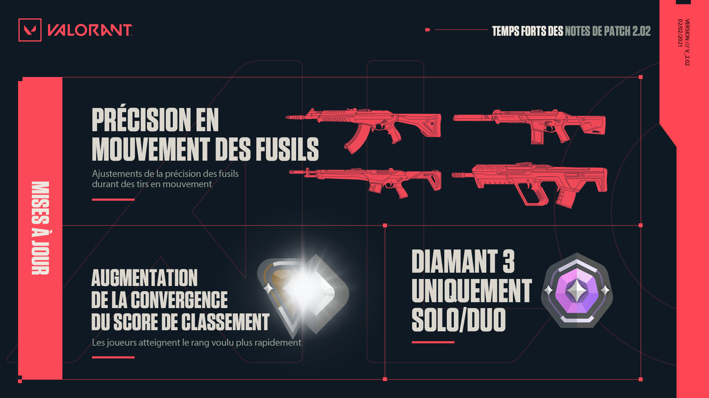

Temps fort de la mise a jours 2.02

MISES À JOUR DES ARMES :
• L'imprécision des fusils en course a été augmentée : 3,75 >>> 5,0
• L'imprécision des fusils en marche a été augmentée : 0,8 >>> 1,1
• L'imprécision des fusils en déplacement accroupi a été augmentée : 0,3 >>> 0,8
MISES À JOUR DU MODE COMPÉTITION :
• Nous avons augmenté l'efficacité de la convergence du score de classement : les joueurs convergent désormais plus rapidement vers leur cote de matchmaking (MMR). Ils ont donc besoin de moins de parties pour affirmer leur rang
Les joueurs obtiennent ainsi le rang qu'ils méritent avec moins de parties.
Cela permettra à chacun de disposer plus rapidement d'un rang/rang classé illustrant mieux son talent. Nous avons souhaité être prudents quand nous avons lancé le nouveau système classé, mais nous constatons que, dans certains cas, les joueurs doivent participer à trop de parties pour atteindre le rang voulu. En doublant l'efficacité de la convergence, les joueurs situés aux extrémités pourront avoir des gains atteignant 40 SC ou plus, ce qui les conduira plus vite vers leur rang adéquat.
• Les joueurs de Fer à Diamant qui réussissent particulièrement bien dans une partie (comparativement à leurs propres performances moyennes) obtiendront un bonus de score de classement.
Nous voulons récompenser les joueurs qui se révèlent dans une partie et se montrent au-dessus des attentes.
Cela vous permettra de mettre en valeur les parties où vous réussissez bien mieux que d'habitude. En conséquence, vous monterez un peu plus rapidement dans le classement, et vous serez récompensés pour ces parties où vous assurez. Rappelez-vous qu'il s'agit de faire mieux que vos performances habituelles, pas de surclasser vos coéquipiers ou vos adversaires.
Il s'agit d'une autre manière de combattre les « smurfs » qui se montrent exceptionnels dans une partie. Ils monteront plus rapidement dans le classement, ce qui correspondra mieux à leurs compétences (et les fera participer à des parties d'un niveau plus élevé).
• Au palier Diamant 3, les groupes arrangés sont désormais limités à 2 joueurs.
Nous avions besoin d'un « terrain d'exercice » avant le palier Immortel, et cela devrait préparer les joueurs avant leur entrée dans le classement.
Nous apprécions et nous voulons soutenir celles et ceux d'entre vous qui jouent autant que possible avec leurs amis, mais nous voulons aussi augmenter le degré de confiance et d'intégrité compétitive pour les joueurs qui accèdent au classement.
Nous voulons maintenir le prestige d'Immortel+, et nous avons besoin d'une petite zone tampon afin de nous assurer que les joueurs ont démontré leur talent avant de passer en Immortel. Cela évitera de jouer en groupe arrangé de 5 juste avant Immortel, et cela préparera les joueurs en Diamant 3 à ce vers quoi ils se dirigent. En somme, le palier Diamant 3 va devenir le dernier terrain d'entraînement pour Immortel+.
• Votre score de classement actuel s'affiche désormais dans l'onglet Carrière : Score de classement. À la fin d'un acte, votre score de classement final sera conservé et affiché sur le badge de rang d'acte que vous aurez gagné.
MISES À JOUR DES MODES :
• Nous avons ajouté un limiteur dans la boutique d'armes du jeu pour empêcher les joueurs de faire des achats en succession rapide, ce qui pouvait causer des problèmes de performances.
Cette limitation est légère dans la plupart des modes, mais plus stricte en Combat à mort.
CORRECTIONS DE BUGS :
• Correction d'un bug qui permettait aux joueurs de poser le spike en silence
• Correction de problèmes qui empêchaient les joueurs de bouger après avoir quitté la vue du drone de Sova ou la vue de la caméra de Cypher
• Correction d'un bug qui empêchait les joueurs de quitter la vue de la caméra de Cypher ou de bouger leur souris
• Correction d'un problème à cause duquel prendre des armes entassées entraînait une tentative pour les prendre toutes.
• Correction d'un bug qui laissait ouvert la fenêtre de chat pendant la partie.
• Correction d'un bug qui faisait toujours apparaître les messages des ennemis en Combat à mort alors que vous aviez choisi de les masquer.
• Correction d'un bug qui ne faisait pas augmenter correctement la pénalité de temps d'attente pour les joueurs qui quittaient la file de jeu à répétition.
• Correction d'un bug qui faisait s'afficher l'écran de promotion moins longtemps que prévu.
• Correction d'un bug qui faisait apparaître un mauvais icone d'Immortel à certains endroits.
• Correction de plusieurs problèmes de localisation qui compliquaient la lecture de l'écran de fin de partie, du salon et de l'historique des parties dans certaines langues.
• Correction d'un bug qui perturbait le fonctionnement de plusieurs compétences dans les fumigènes de Brimstone et Jett, même quand leurs cibles pouvaient les voir.
• Correction d'un bug qui faisait coincer le ciblage de Voie des ombres d'Omen dans les angles à beaucoup plus grande distance.
• Correction d'un bug qui déclenchait l'audio de l'agent et non celui de l'objet en lançant la Feinte de Yoru dans un téléporteur, puis en lançant un autre projectile.
• Correction du Traqueur de Skye, qui ne pouvait pas trouver les ennemis sur les cordes du site B de Split.
• Correction d'un problème qui faisait coincer Yoru à différents endroits sur les cartes quand il utilisait Visite surprise.
• Correction d'un problème avec Sova qui jouait une animation de marche incorrecte après l'extinction de son Drone rapace.
• Correction d'un problème qui permettait à Omen de changer d'équipement juste après avoir sélectionné un emplacement pour Depuis les ombres.
• Correction d'un problème qui faisait se détacher la caméra d'Omen lors de l'utilisation de Voile sombre dans des conditions de réseau défavorables.
• Correction d'un problème qui permettait de poser le spike sur le mur de Sage sur les sites d'Icebox.
• La luminosité a été réduite sur les visuels initiaux lors des aveuglements.